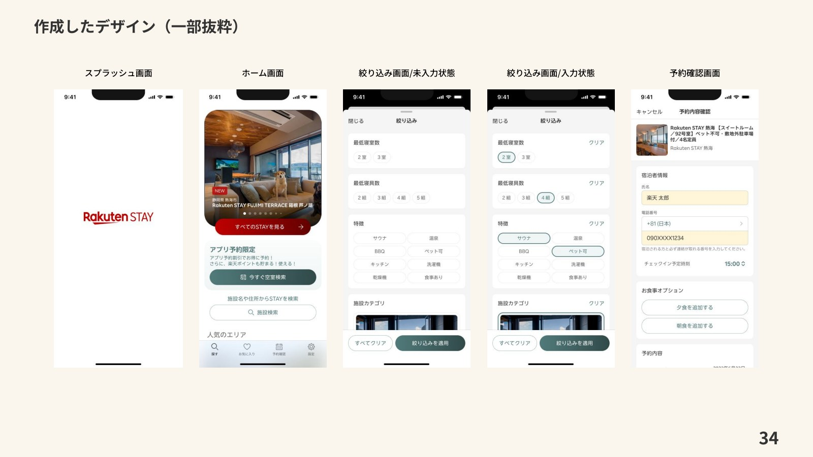

アジアクエスト株式会社での制作実績
楽天ステイ
全国のRakuten STAY施設の検索・宿泊予約ができるアプリ。特徴的な設備から施設を絞り込める、iOS・Android向けのUIデザインと要件定義を担当しました。
担当：UIデザイン作成・要件定義
制作期間・体制
2024年1月〜2024年4月。PM1名、デザイナー1名、エンジニア4名の体制で制作しました。
担当画面
スプラッシュ、ホーム、絞り込みの未入力・入力状態、予約確認画面を紹介します。


はじめまして
アジアクエスト株式会社での制作実績
全国のRakuten STAY施設の検索・宿泊予約ができるアプリ。特徴的な設備から施設を絞り込める、iOS・Android向けのUIデザインと要件定義を担当しました。
担当：UIデザイン作成・要件定義
2024年1月〜2024年4月。PM1名、デザイナー1名、エンジニア4名の体制で制作しました。
スプラッシュ、ホーム、絞り込みの未入力・入力状態、予約確認画面を紹介します。
